Η γη
της Πίνδου.
Από τη σκιά των κορμών ως το γυμνό βουνό. Μια διαδρομή μέσα στις αλλαγές του φωτός.

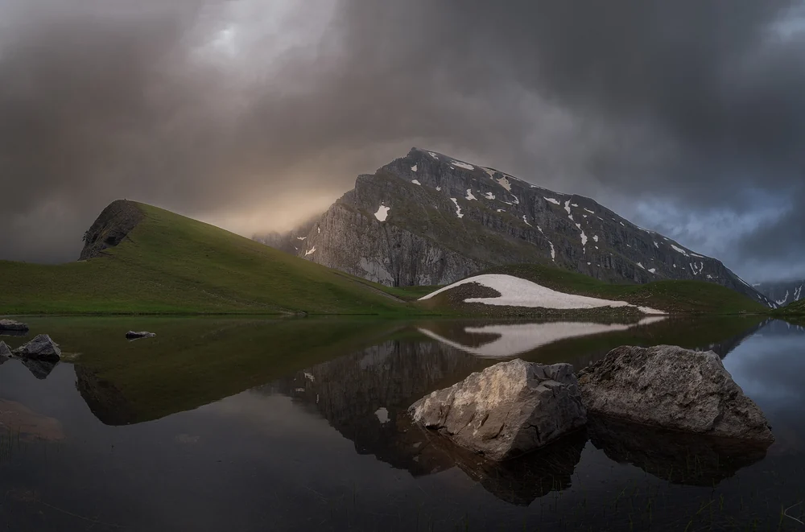
Σύννεφα και αντανακλάσεις στη Δρακόλιμνη της Τύμφης. Το ίδιο τοπίο αλλάζει πρόσωπο μαζί με το φως.
Το δάσος κλείνει για λίγο τον ορίζοντα. Το ποτάμι τον ανοίγει ξανά. Ψηλότερα, οι κορμοί αραιώνουν και μένουν το λιβάδι, η πέτρα και μια μικρή επιφάνεια νερού που χωρά ολόκληρο τον ουρανό. Στη βόρεια Πίνδο, το τοπίο αλλάζει διαρκώς κλίμακα. Η φωτογραφική διαδρομή περνά από τη Βάλια Κάλντα και τη Βοβούσα στον Βίκο, την Τύμφη, τη Φλέγγα και τον Σμόλικα.
Το φως βρίσκει δρόμο στο δάσος
Η Βάλια Κάλντα και ο Αώος ανήκουν στον ίδιο ορεινό κόσμο. Τα σύννεφα χαμηλώνουν πάνω στις πλαγιές, το μονοπάτι χάνεται ανάμεσα στους κορμούς και το ποτάμι ανοίγει ξανά τον ορίζοντα.

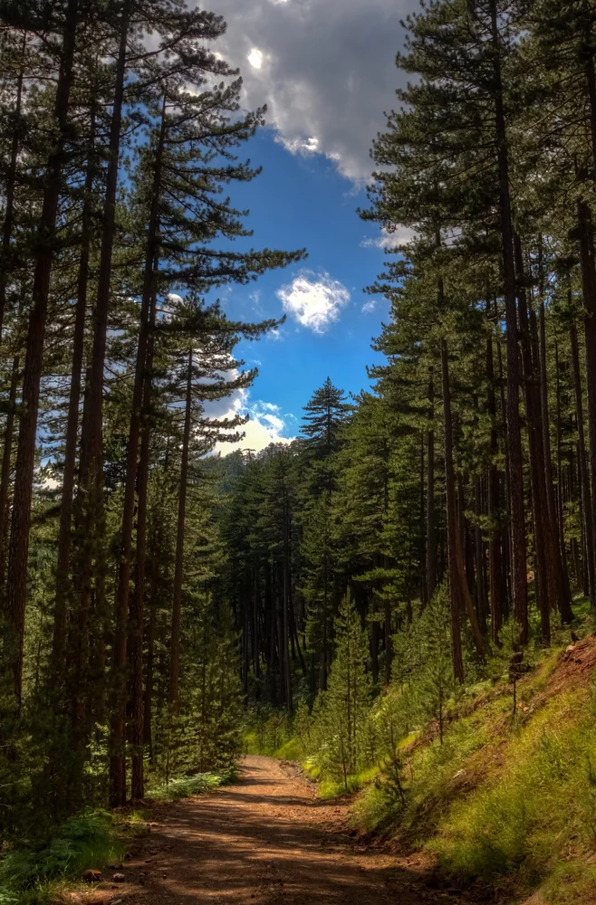
Ένας δρόμος μέσα στη Βάλια Κάλντα. Το φως περνά ανάμεσα στους κορμούς και αλλάζει την κλίμακα του δάσους.

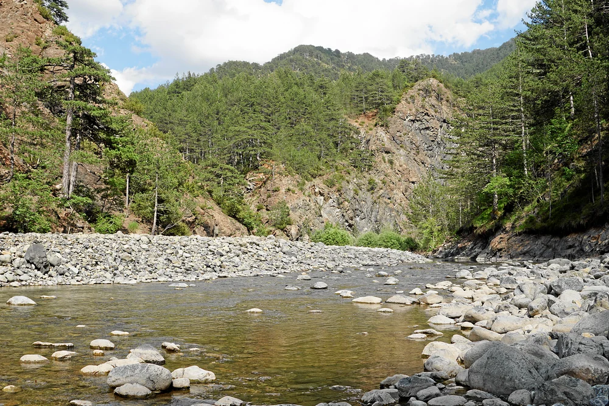
Ο Αώος κοντά στη Βοβούσα. Το ποτάμι διασχίζει την πέτρινη κοίτη ανάμεσα σε δασωμένες πλαγιές.

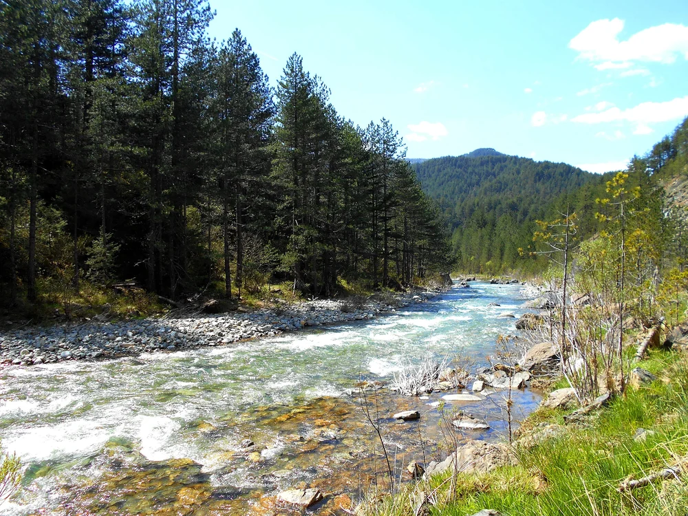
Πέτρες και τρεχούμενο νερό στο Εθνικό Πάρκο Πίνδου, σε φωτογραφική καταγραφή της Βάλια Κάλντα.

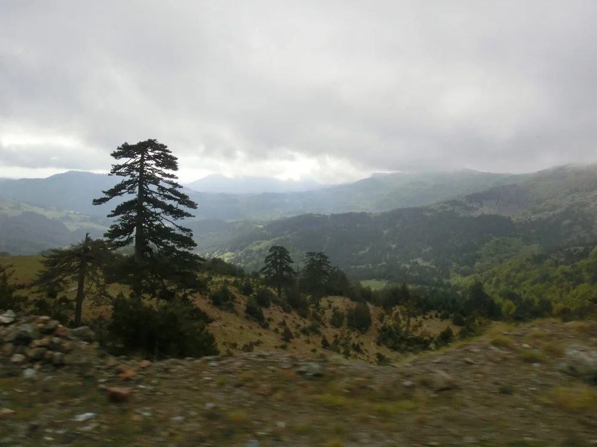
Δασωμένες πλαγιές στο Εθνικό Πάρκο Πίνδου. Τα χαμηλά σύννεφα αφήνουν διαδοχικά ανοίγματα στον ορίζοντα.
Λεζάντες & φωτογράφοι
Ένας δρόμος μέσα στη Βάλια Κάλντα. Το φως περνά ανάμεσα στους κορμούς και αλλάζει την κλίμακα του δάσους.
Φωτ. Agis Kothalis · CC BY-SA 4.0Ο Αώος κοντά στη Βοβούσα. Το ποτάμι διασχίζει την πέτρινη κοίτη ανάμεσα σε δασωμένες πλαγιές.
Φωτ. Mboesch · CC BY-SA 4.0Πέτρες και τρεχούμενο νερό στο Εθνικό Πάρκο Πίνδου, σε φωτογραφική καταγραφή της Βάλια Κάλντα.
Φωτ. Eleni Alexiou · CC BY-SA 4.0Δασωμένες πλαγιές στο Εθνικό Πάρκο Πίνδου. Τα χαμηλά σύννεφα αφήνουν διαδοχικά ανοίγματα στον ορίζοντα.
Φωτ. Λάγκης Ανδρέας · CC BY-SA 4.0
Ένας γαλάζιος δρόμος
Από τις μικρές λεκάνες του βράχου ως τα ανοιχτά νερά του Βοϊδομάτη, το νερό αλλάζει ταχύτητα και χρώμα. Στην όχθη, στο γεφύρι ή μέσα στη βάρκα, κάθε θέση δίνει μια άλλη εικόνα του ίδιου τοπίου.

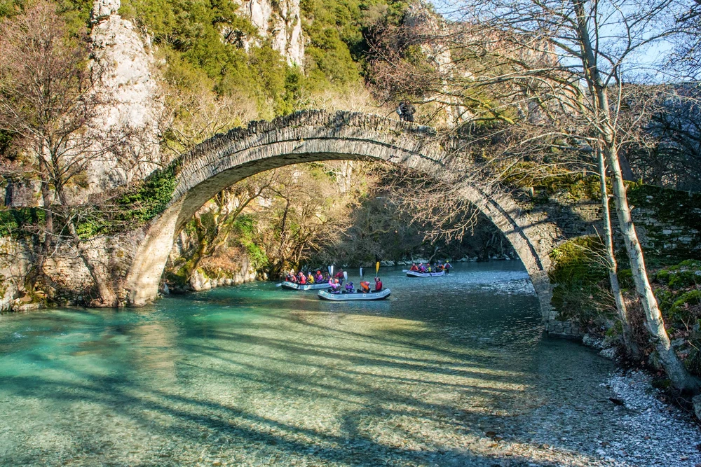
Μια βάρκα περνά κάτω από το πέτρινο γεφύρι, στα νερά του Βοϊδομάτη.

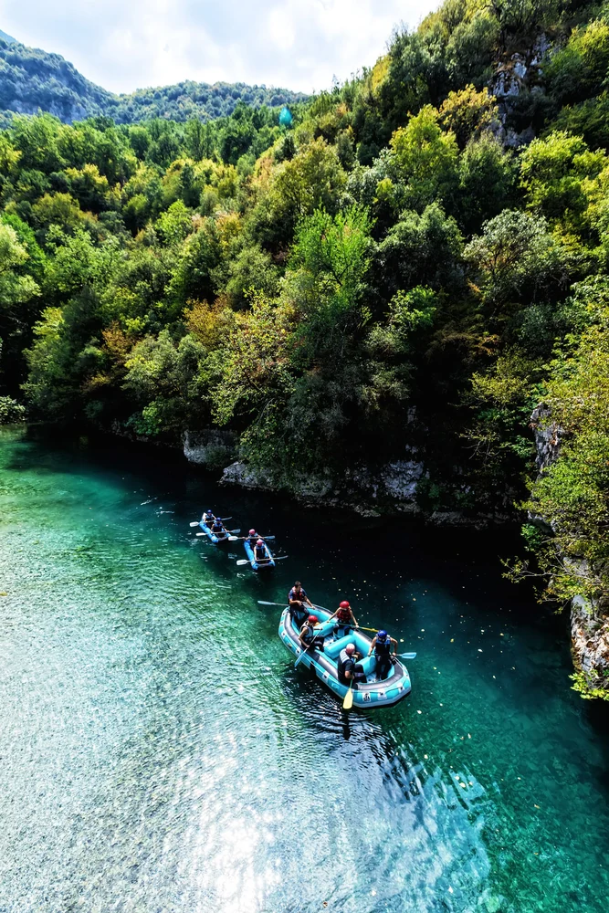

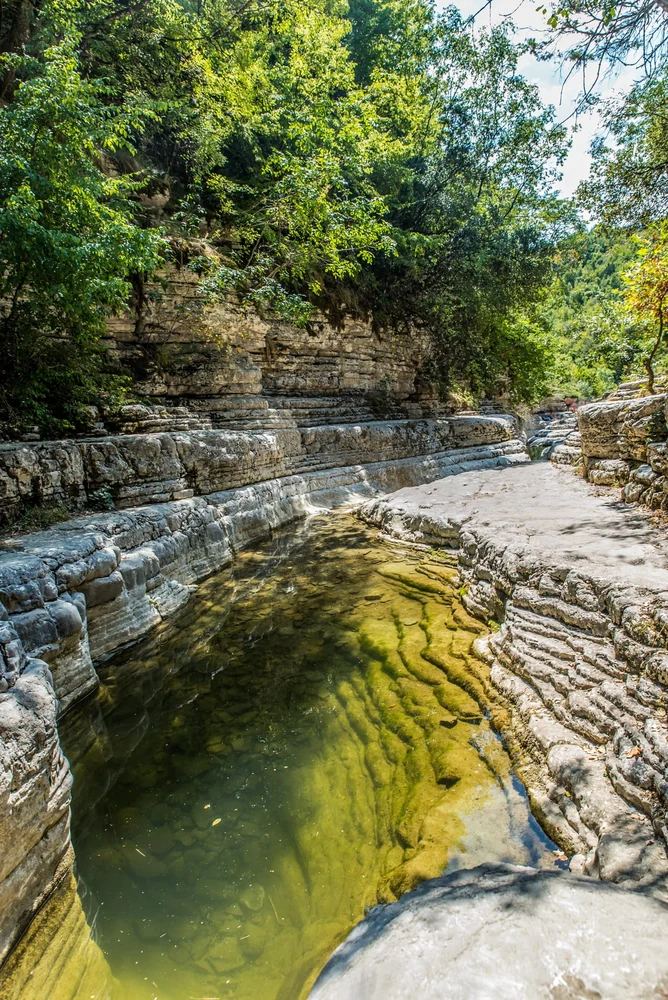
Το νερό σμιλεύει μικρές λεκάνες στον βράχο, ανάμεσα στα δύο Πάπιγκα.

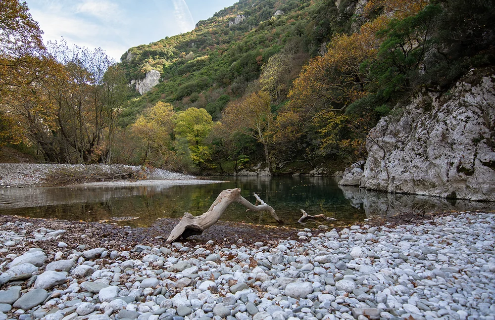
Φθινοπωρινά χρώματα στον Βοϊδομάτη. Η όχθη, τα βότσαλα και το νερό κρατούν διαφορετικές αποχρώσεις του ίδιου φωτός.
Λεζάντες & φωτογράφοι
Μια βάρκα περνά κάτω από το πέτρινο γεφύρι, στα νερά του Βοϊδομάτη.
Το ποτάμι ανοίγει έναν γαλάζιο διάδρομο ανάμεσα στα δέντρα.
Φωτ. Discover GreeceΤο νερό σμιλεύει μικρές λεκάνες στον βράχο, ανάμεσα στα δύο Πάπιγκα.
Φωτ. Discover GreeceΦθινοπωρινά χρώματα στον Βοϊδομάτη. Η όχθη, τα βότσαλα και το νερό κρατούν διαφορετικές αποχρώσεις του ίδιου φωτός.
Φωτ. NikGlyk · CC BY-SA 4.0
Ο Βίκος αλλάζει πρόσωπο
Το πρώτο φως φανερώνει τις πτυχές του βράχου. Το χιόνι τις τονίζει, η συννεφιά τις σβήνει και το τελευταίο φως τις ζεσταίνει. Η χαράδρα μένει η ίδια, η εικόνα της όμως αλλάζει με την εποχή και την ώρα.

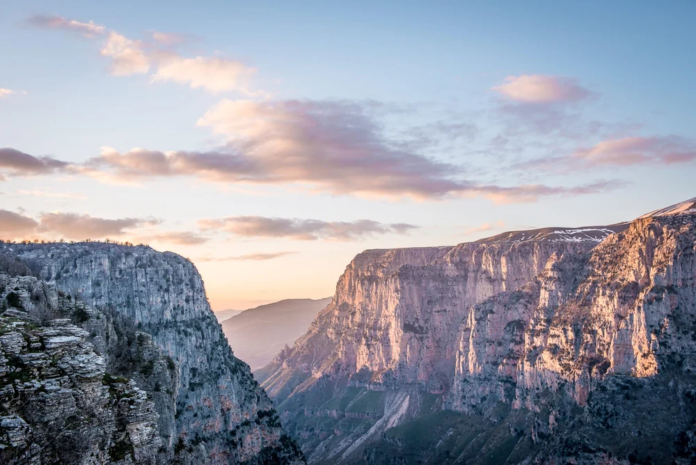
Το τελευταίο φως αλλάζει το χρώμα των κάθετων βράχων του Βίκου.

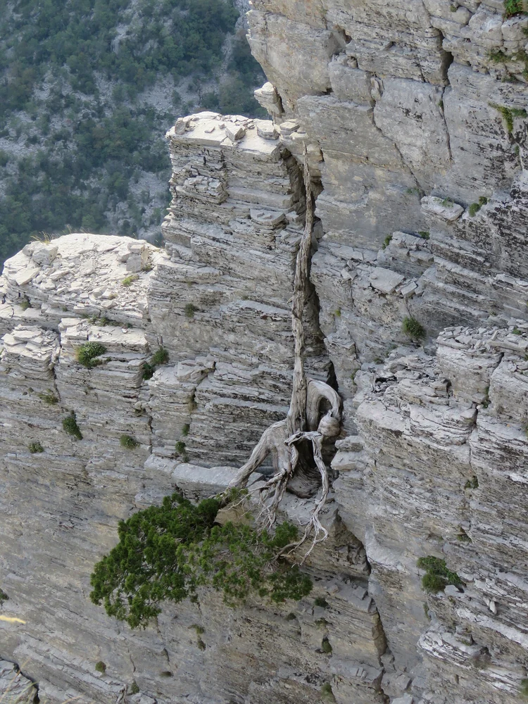
Ένα δέντρο αναπτύσσεται στην απότομη ορθοπλαγιά του Βίκου, κοντά στη Μπελόη. Η ζωή βρίσκει χώρο στις σχισμές του βράχου.

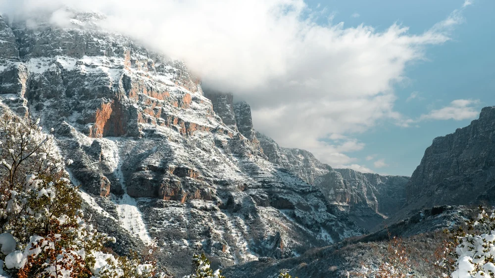
Χιόνι και χαμηλά σύννεφα πάνω από το φαράγγι του Βίκου.

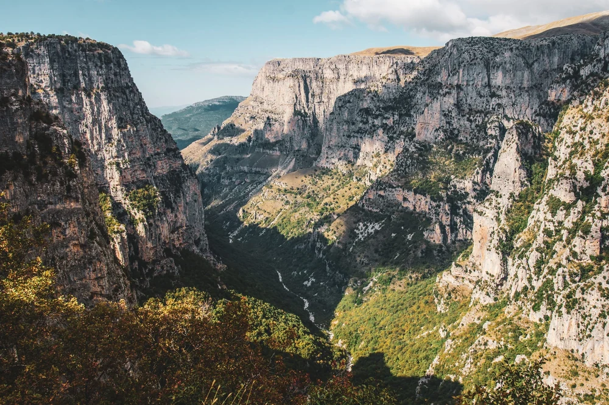

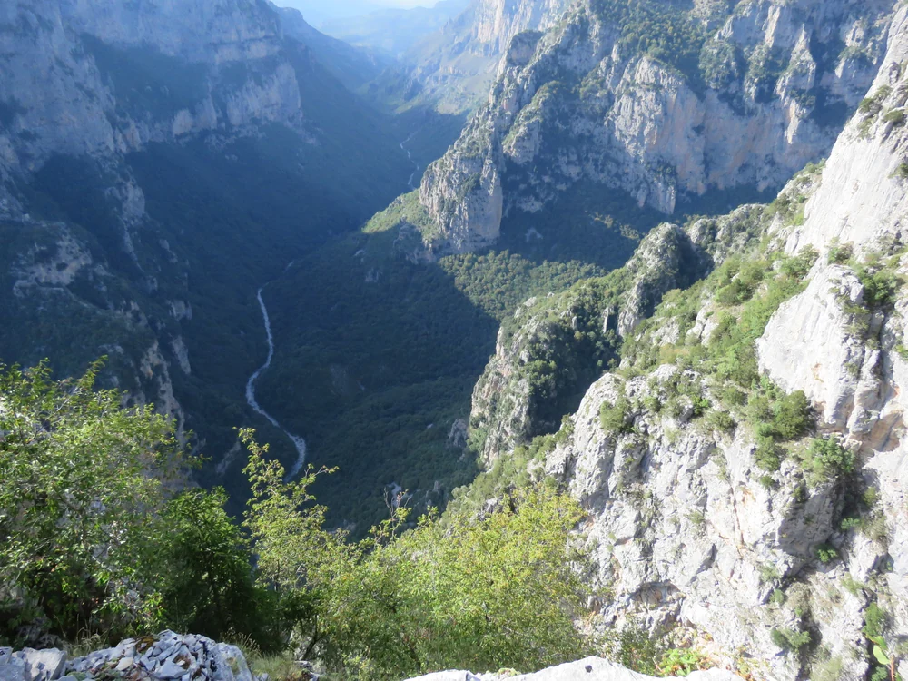
Η χαράδρα του Βίκου από τη θέση Μπελόη. Οι κάθετοι τοίχοι δίνουν την κλίμακα του τοπίου.
Λεζάντες & φωτογράφοι
Το τελευταίο φως αλλάζει το χρώμα των κάθετων βράχων του Βίκου.
Ένα δέντρο αναπτύσσεται στην απότομη ορθοπλαγιά του Βίκου, κοντά στη Μπελόη. Η ζωή βρίσκει χώρο στις σχισμές του βράχου.
Φωτ. Calistemon · CC BY-SA 4.0Χιόνι και χαμηλά σύννεφα πάνω από το φαράγγι του Βίκου.
Ανοιχτή θέα στη βαθιά χαράδρα και στις δασωμένες πλαγιές της.
Φωτ. Discover GreeceΗ χαράδρα του Βίκου από τη θέση Μπελόη. Οι κάθετοι τοίχοι δίνουν την κλίμακα του τοπίου.
Φωτ. Calistemon · CC BY-SA 4.0
Εκεί που μένουν ο ουρανός και η πέτρα
Ψηλότερα, το δάσος δίνει τη θέση του στα λιβάδια, στους γυμνούς βράχους και στις λίμνες. Η Τύμφη, η Φλέγγα και ο Σμόλικας ολοκληρώνουν τη διαδρομή με ανοιχτούς ορίζοντες.

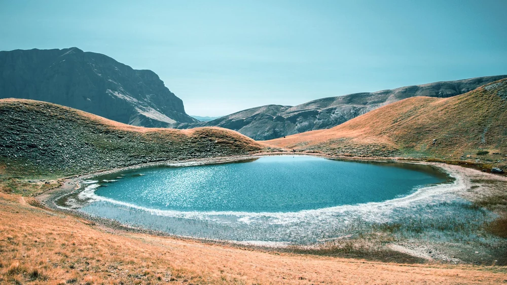
Μια γαλάζια επιφάνεια νερού μέσα στις γυμνές πτυχές της Τύμφης.

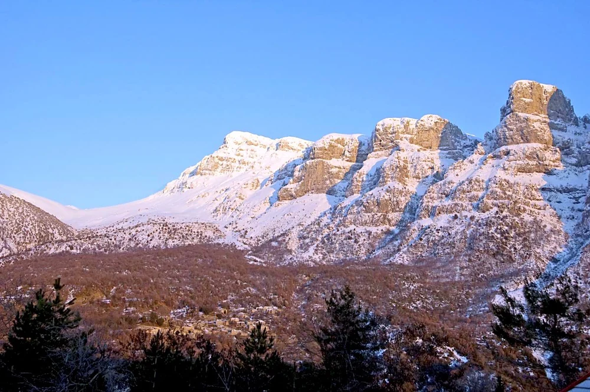

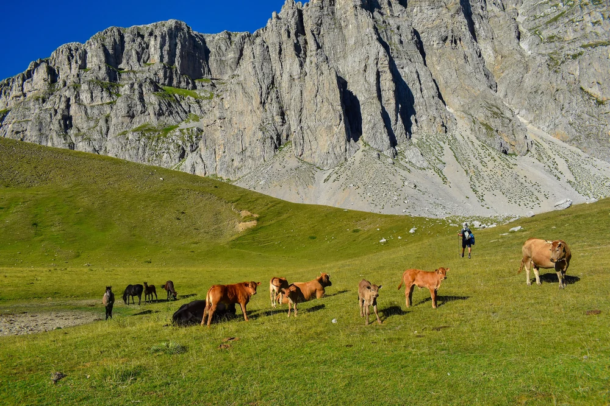
Βοοειδή σε αλπικό λιβάδι της Τύμφης. Η κτηνοτροφία αφήνει το δικό της ίχνος στο ορεινό τοπίο.

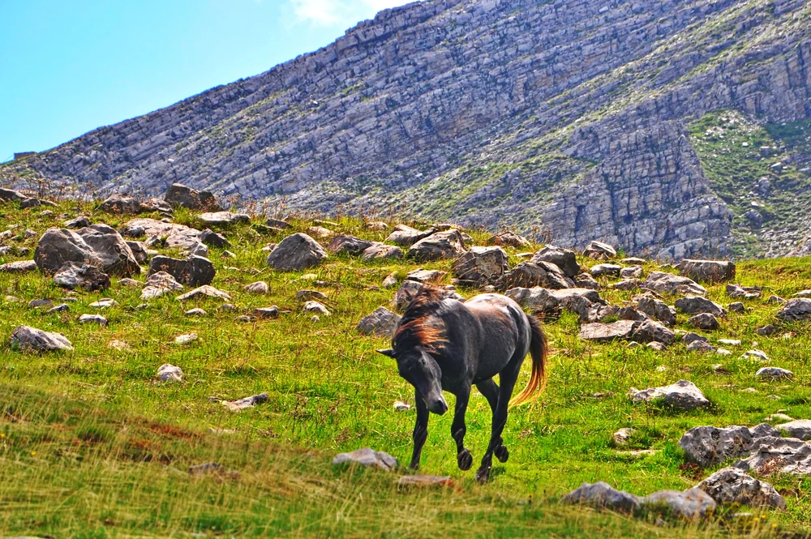
Άλογο στα λιβάδια της Τύμφης. Πίσω του, οι κεκλιμένες στρώσεις του βράχου αλλάζουν τη γραμμή του ορίζοντα.

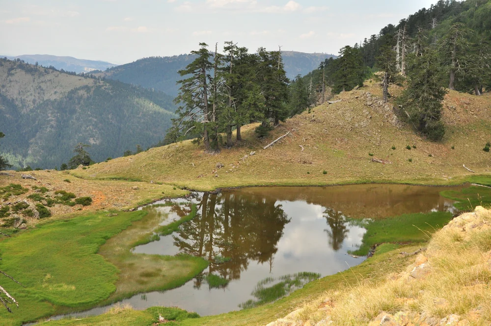
Μία από τις λίμνες της Φλέγγας. Η μικρή επιφάνεια του νερού αντανακλά τις πλαγιές και τον ουρανό.

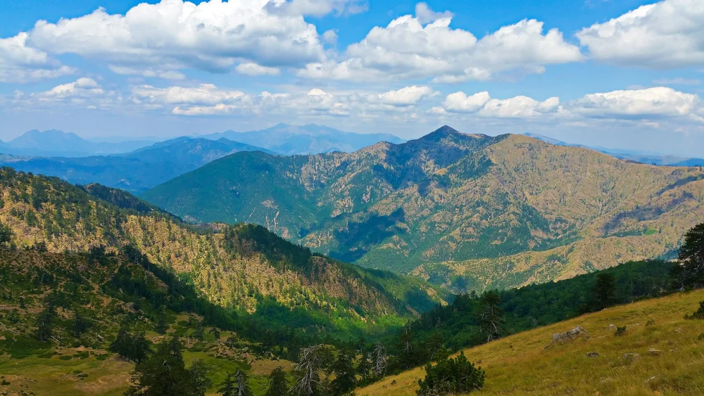
Πλαγιές του Σμόλικα, ανάμεσα σε δάσος και γυμνό βουνό. Από ψηλά, οι αποστάσεις γίνονται διαδοχικές γραμμές.

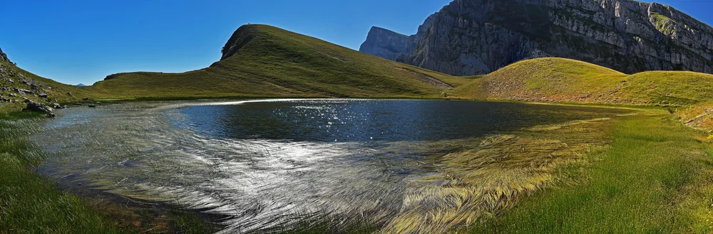
Η Δρακόλιμνη της Τύμφης, σε υψόμετρο περίπου 2.050 μέτρων. Νερό, λιβάδι και βράχος στον ίδιο ορίζοντα.
Λεζάντες & φωτογράφοι
Μια γαλάζια επιφάνεια νερού μέσα στις γυμνές πτυχές της Τύμφης.
Το χιόνι φωτίζει τις πτυχές των Πύργων της Αστράκας.
Φωτ. Discover GreeceΒοοειδή σε αλπικό λιβάδι της Τύμφης. Η κτηνοτροφία αφήνει το δικό της ίχνος στο ορεινό τοπίο.
Φωτ. Andloukakis · CC BY-SA 4.0Άλογο στα λιβάδια της Τύμφης. Πίσω του, οι κεκλιμένες στρώσεις του βράχου αλλάζουν τη γραμμή του ορίζοντα.
Φωτ. Stavros Charos · CC BY-SA 4.0Μία από τις λίμνες της Φλέγγας. Η μικρή επιφάνεια του νερού αντανακλά τις πλαγιές και τον ουρανό.
Φωτ. Stella Kakatatsi · CC BY-SA 4.0Πλαγιές του Σμόλικα, ανάμεσα σε δάσος και γυμνό βουνό. Από ψηλά, οι αποστάσεις γίνονται διαδοχικές γραμμές.
Φωτ. Μεταξία Φωτίου · CC BY-SA 4.0Η Δρακόλιμνη της Τύμφης, σε υψόμετρο περίπου 2.050 μέτρων. Νερό, λιβάδι και βράχος στον ίδιο ορίζοντα.
Φωτ. Andloukakis · CC BY-SA 4.0
Φωτογράφοι, τεκμηρίωση & προέλευση
- ΟΦΥΠΕΚΑ · Μονάδα διαχείρισης Εθνικού Πάρκου Βόρειας Πίνδου
- Δήμος Κόνιτσας · Δρακόλιμνη Τύμφης
- Εθνικό Πάρκο Βόρειας Πίνδου · Διαδρομές και μονοπάτια
- Discover Greece · Τοπία και εμπειρίες στο Ζαγόρι
Οι εικόνες ζώων δείχνουν άλογο και βοοειδή στο ορεινό τοπίο. Δεν παρουσιάζονται ως καταγραφές σπάνιας άγριας πανίδας. Οι φωτογραφίες προέρχονται από διαφορετικές εποχές και επισκέψεις.
Η προέλευση και οι φωτογράφοι αναφέρονται στις συλλογές και στην προβολή κάθε εικόνας. Οι άδειες Creative Commons σημειώνονται όπου ισχύουν. Τα δικαιώματα των υπόλοιπων εικόνων παραμένουν στους αντίστοιχους δημιουργούς και εκδότες. Έγινε μόνο προσαρμογή μεγέθους και μετατροπή σε WebP. Στη μεγέθυνση προβάλλεται ολόκληρη η εικόνα.